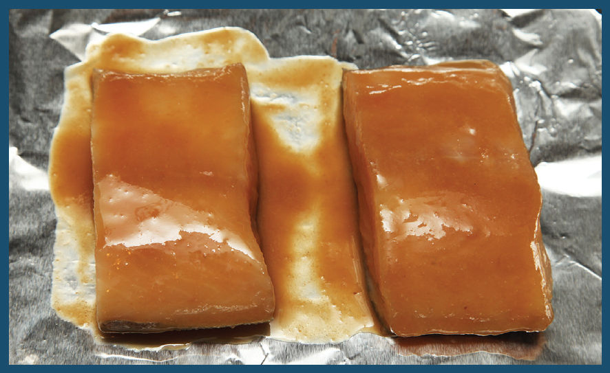
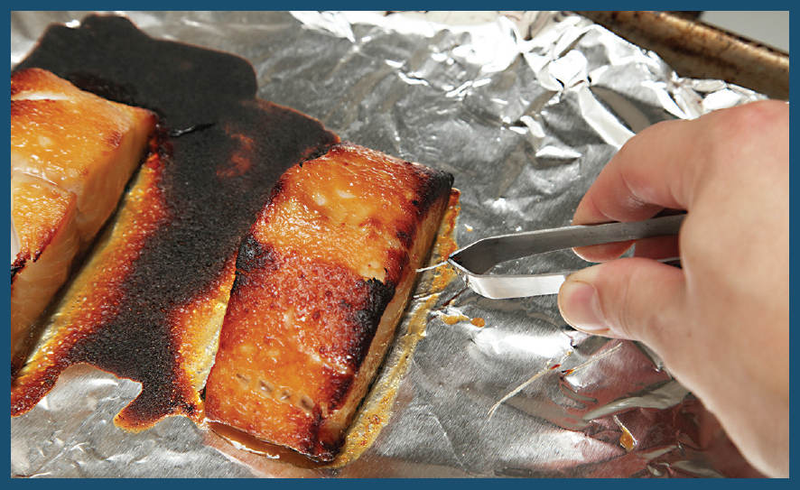
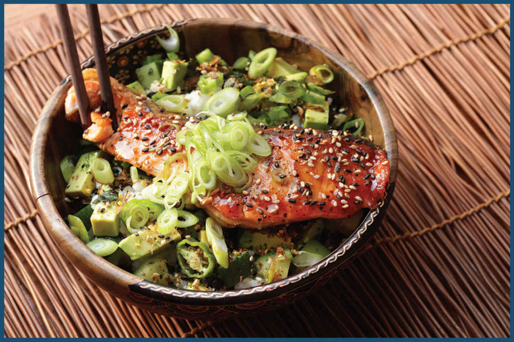

Miso-Broiling
Broiling fish and vegetables glazed in a mixture of Saikyo miso (a type of sweet white miso paste), sake, and mirin is a surefire way to add intense umami flavor. It’s most commonly used for fish and eggplant, but the technique also works well on pumpkin, sweet potatoes, scallions, broccoli, corn, or even Western foods like bacon and hamburgers (seriously: coat a beef patty in the same miso mixture used in the following black cod recipe, broil that burger, and then send out that handwritten thank-you note to me).
SAIKYO-MISO-MARINATED BLACK COD OR SALMON RICE BOWLS
These days, miso-marinated black cod is almost synonymous with Nobu Matsuhisa’s eponymous New York restaurant, though he by no means invented the dish. It stems from a traditional Japanese preparation called kasuzuke, in which fish and vegetables are marinated in the leftover lees from sake production before being broiled or grilled (kasu = sake lees, and zuke = to apply). You can still buy black cod premarinated in lees at Japanese markets, ready to broil and serve.
But Nobu’s version, made with miso and sake, is a little bit easier in terms of finding ingredients at your standard supermarket. It’s also every bit as delicious (perhaps even more). This is the fish dish to pull out when you’re ready to blow away your spouse or dinner guests but don’t want to put more than five minutes of effort into making dinner. Five minutes. Really.
The dish can be made with any high-fat fish with thick filets, but I find it works best with black cod (also known as sablefish), Chilean sea bass (aka. Patagonian toothfish—it’s heavily overfished, so be careful about buying this one), or salmon. The same qualities that make sablefish and salmon great for smoking—a very rich, buttery texture and high fat content with flesh that turns tender when cooked rather than flaky or tough—makes them ideal for broiling. In the case of sablefish, it’s nearly impossible to overcook it. Seriously. Try. I dare you.
Nobu’s recipe calls for marinating the fish for a full 3 days in a mixture of miso, sake, and mirin, but I’ve actually found that a one-day marinade produces a superior end product—it’s just as flavorful (marinades don’t penetrate particularly far into meat) and comes out more tender. If I’m pressed for time, I’ll even go with a 15- to 30-minute marinade. Here’s how to do it:
Step 1 • Marinate the Fish

The marinade is a simple mix of miso, sake, sugar, soy sauce, and a bit of oil. The miso and soy are both quite salty, and it’s this salty liquid that acts as a brine, weakening proteins and allowing the fillet to retain more moisture as it cooks. Both are also high in glutamates, the chemical class responsible for our sensation of umami, or meatiness. Sugar speeds up the browning process, while oil acts as a medium of heat transfer, causing the surface to char and sizzle evenly.
I whisk up the marinade, add the fish fillets, turn them to coat, then let them rest at least 15 minutes and up to a few days (I transfer them to a zipper-lock bag in the refrigerator if marinating longer than half an hour or so).
Step 2 • Broil

Once marinated, cooking it is as simple as transferring it to a foil-lined rimmed baking sheet, then setting it under a preheated broiler in the oven or toaster oven. If I want to make a full meal out of it, I’ll add some vegetables like scallions or broccoli or sliced kabocha squash to the tray, drizzling them with extra marinade before broiling everything together.
Why bother lining the tray with foil? Well, not only does it make for simple cleanup; it also acts as a built-in protector. If you notice your fish browning in one section faster than the other, just fold the edge of the foil up and over the darker sections to serve as a shield while the fish continues cooking.
Broil until the top surface is deeply caramelized and the fish is just barely cooked through. How do you know it’s done? Easy: use the bones to tell you. When the fish is barely cooked through to the center, its pinbones should come out with no effort when you gently tug them with a pair of tweezers (pull them in the direction they are facing to prevent tearing the flesh). If your fish doesn’t have any bones, poke it with a thin metal skewer or cake tester. When cooked through, the tester should meet no resistance. If the fish is still underdone, you’ll feel it poking through the membrane between layers of flesh.
Step 3 • . . .
There . . . is no step 3. By the time your fish is lightly charred on the surface, the center should be at just about 115° to 125°F (aka a perfect rare to medium-rare), and it’s ready to eat.
